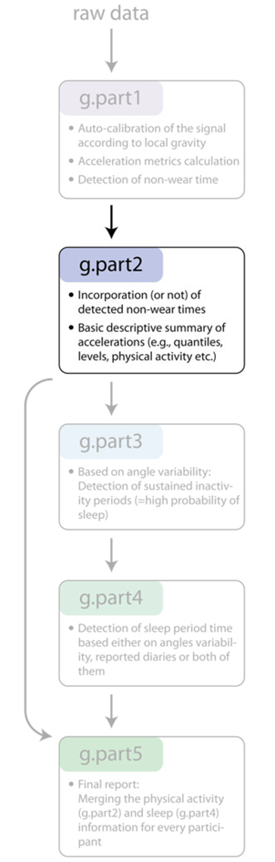

Workshop Slides
Institute for Postive Psychology and Education, Australian Catholic University
21 April 2023
Before We Start
Introduction
Why Me?
- More than a decade working with accelerometers
- Projects with >25k accelerometers
- Contributed code to
GGIR
- Developed packages for distributed processing
Overview of the workshop
Objectives
- Understand why open-source methods matter
- Have a basic understanding of R
- Understand how to process accelerometer data with GGIR, and interpret the output
Agenda
- The advantages (and some disadvantages) of using open-source processing methods
- The basics of using R
- Installing and running
GGIR - Understanding the settings and options
- Interpreting the output
- Common issues and troubleshooting steps
- Advanced options (e.g., day segment analysis)
Understanding Accelerometer Data and the Need for GGIR
Basics of accelerometer data
Limitations of proprietary methods
- Limited transparency
- Limited scalability
- Limited extensability
- Vendor lock-in
Why GGIR?
- Multi-device
- New and expanding features
- Open-source nature
- Scalable and extensible
What do we really want to know?
- How much? (Volume)
- How hard? (Intensity)
Physical activity metrics


doi: 10.1136/bjsports-2020-103604
New(er) physical activity metrics
MX Metrics

Rowlands, 2018
doi: 10.1186/s40798-019-0225-9
New(er) physical activity metrics
Intensity Gradient
doi: 10.1123/pes.2018-0201
New(er) physical activity metrics
Intensity Gradient


doi: 10.1249/MSS.0000000000001561
Why GGIR?
Calculate all of these metrics at once
A (Very) Quick Intro to R
What is R?
- R is a free, open-source programming language
- Specially designed for data analysis and statistics
- Widely used in research, data science, and industry
An example
Fitting a simple linear model:
\[\hat{y} = \beta_0 + \beta_1x\]
R Code
Why use R?
Pros
- Free
- Reproducible
- Extensive set of add-on tools and packages
- Typeset as you go
Cons
- Steeper learning curve than point-and-click interfaces
R Resources
R for Data Science
Software Carpentry
Activity: Intro to R
Processing Accelerometer Data with GGIR
Understanding what GGIR is doing
Figure from Migueles et al., 2019 (10.1123/jmpb.2018-0063)
Understanding what GGIR is doing
Understanding what GGIR is doing
Part 1
- Pre-processing steps
- Acceleration metrics (data collapsed)
- Non-wear detection and imputation
- Longest time to complete

Understanding what GGIR is doing
Part 2
- Data imputation
- Physical activity calculation
- Output: Part 2 reports, data quality plots



Understanding what GGIR is doing
Part 3
- Detection of sustained inactivity
- Estimate start/end period of sleep window
Understanding what GGIR is doing
Part 4
- Convert detected inactivity in sleep window to sleep
- Or use sleep diary for sleep window
- Output: Part 4 reports

Understanding what GGIR is doing
Part 5
- Collate data from Part 2 and Part 4 for final report
- Output: Part 5 reports

Running the main GGIR function
All options
GGIR(
mode,
datadir,
f0,
f1,
windowsizes,
desiredtz,
overwrite,
do.parallel,
maxNcores,
myfun,
outputdir,
studyname,
chunksize,
do.enmo,
do.lfenmo,
do.en,
do.bfen,
do.hfen,
do.hfenplus,
do.mad,
do.anglex,
do.angley,
do.angle,
do.enmoa,
do.roll_med_acc_x,
do.roll_med_acc_y,
do.roll_med_acc_z,
do.dev_roll_med_acc_x,
do.dev_roll_med_acc_y,
do.dev_roll_med_acc_z,
do.lfen,
do.lfx,
do.lfy,
do.lfz,
do.hfx,
do.hfy,
do.hfz,
do.bfx,
do.bfy,
do.bfz,
do.zcx,
do.zcy,
do.zcz,
lb,
hb,
n,
do.cal,
spherecrit,
minloadcrit,
printsummary,
print.filename,
backup.cal.coef,
rmc.noise,
rmc.dec,
rmc.firstrow.acc,
rmc.firstrow.header,
rmc.col.acc,
rmc.col.temp,
rmc.col.time,
rmc.unit.acc,
rmc.unit.temp,
rmc.origin,
rmc.header.length,
mc.format.time,
rmc.bitrate,
rmc.dynamic_range,
rmc.unsignedbit,
rmc.desiredtz,
rmc.sf,
rmc.headername.sf,
rmc.headername.sn,
rmc.headername.recordingid,
rmc.header.structure,
rmc.check4timegaps,
rmc.col.wear,
rmc.doresample,
imputeTimegaps,
selectdaysfile,
dayborder,
dynrange,
configtz,
minimumFileSizeMB,
interpolationType,
expand_tail_max_hours,
metadatadir,
minimum_MM_length.part5,
strategy,
hrs.del.start,
hrs.del.end,
maxdur,
max_calendar_days,
includedaycrit,
L5M5window,
M5L5res,
winhr,
qwindow,
qlevels,
ilevels,
mvpathreshold,
boutcriter,
ndayswindow,
idloc,
do.imp,
storefolderstructure,
epochvalues2csv,
do.part2.pdf,
mvpadur,
window.summary.size,
bout.metric,
closedbout,
IVIS_windowsize_minutes,
IVIS_epochsize_seconds,
IVIS.activity.metric,
iglevels,
TimeSegments2ZeroFile,
qM5L5,
MX.ig.min.dur,
qwindow_dateformat,
anglethreshold,
timethreshold,
acc.metric,
ignorenonwear,
constrain2range,
do.part3.pdf,
sensor.location,
HASPT.algo,
HASIB.algo,
Sadeh_axis,
longitudinal_axis,
HASPT.ignore.invalid,
loglocation,
colid,
coln1,
nnights,
sleeplogidnum,
do.visual,
outliers.only,
excludefirstlast,
criterror,
includenightcrit,
relyonguider,
relyonsleeplog,
def.noc.sleep,
data_cleaning_file,
excludefirst.part4,
excludelast.part4,
sleeplogsep,
sleepwindowType,
excludefirstlast.part5,
boutcriter.mvpa,
boutcriter.in,
boutcriter.lig,
threshold.lig,
threshold.mod,
threshold.vig,
timewindow,
boutdur.mvpa,
boutdur.in,
boutdur.lig,
save_ms5rawlevels,
part5_agg2_60seconds,
save_ms5raw_format,
save_ms5raw_without_invalid,
includedaycrit.part5,
frag.metrics,
LUXthresholds,
LUX_cal_constant,
LUX_cal_exponent,
LUX_day_segments,
do.sibreport
)Running the main GGIR function
Minimum options
Running the main GGIR function
Good starting place
GGIR(
mode = c(1, 2, 3, 4, 5),
datadir = "C:/mystudy/mydata",
outputdir = "D:/myresults",
# =====================
# Part 2
# =====================
idloc = 2,
strategy = 2,
maxdur = 9,
includedaycrit = 16,
qwindow = c(0, 24),
qlevels = c(
960 / 1440, # Top 8 hours
1320 / 1440, # Top 120min
1380 / 1440, # Top 60min
1410 / 1440, # Top 30min
1425 / 1440, # Top 15min
1435 / 1440), # Top 5min
ilevels = seq(0, 4000, 50),
iglevels = 1,
mvpathreshold = c(100),
mvpadur = c(1, 5, 10),
boutcriter = 0.8,
# =====================
# Part 3 + 4
# =====================
def.noc.sleep = 1,
excludefirstlast = FALSE,
includenightcrit = 16,
# =====================
# Part 5
# =====================
threshold.lig = c(30), threshold.mod = c(100), threshold.vig = c(400),
boutcriter.in = 0.9, boutcriter.lig = 0.8, boutcriter.mvpa = 0.8,
boutdur.in = c(1, 10, 30), boutdur.lig = c(1, 10), boutdur.mvpa = c(1),
includedaycrit.part5 = 16,
timewindow = c("MM", "WW"),
# =====================
# Reports
# =====================
visualreport = TRUE,
do.report = c(2, 4, 5)
)Activity: Basic GGIR Processing
Interpreting the Output
Output contents
meta/- Milestone data
- Sleep data quality plots
results/- Reports from each part
QC/- Uncleaned versions of reports
file summary reports/- Summary reports for participants
config.csv
Report contents
- summary vs day|night|person summary
- If youve done part 5, the results you want are probably there
GGIR column names
- Column names from GGIR can be hard to follow!
- The vignette is a great resource.
Understanding the output files
Part 5
Some of the key abbreviations:
- Averages:
_pla(plain);_wei(weighted);_WD(weekday);_WE(weekend) - Intensities:
IN(inactive);LIG(light);MOD(moderate);VIG(vigorous)
Some of the key columns:
Nvaliddays*dur_day_total_[IN|LIG|MOD|VIG]_minACC_day_mgig_gradientdur_spt_minsleep_efficiency
Understanding the output files
Part 4
Some of the key columns (not in part 5):
SleepRegularityIndex
Understanding the output files
Part 2
Some of the key abbreviations:
- Averages:
AD(all days);WD(weekday);WE(weekend);WWD(weighted weekday);WWE(weighted weekend)
Some of the key columns (not in part 5):
AD_p99.65278_ENMO_mg_0.24hr(MX metrics)AD_.0.50._ENMO_mg_0.24hr(ilevels)
Activity: Code breaking
Find a column in one of the outputs that is confusing, and see if you can decipher it using the vignette
Exploring Other Options in GGIR
Running in Multiple Steps
- Part 1 can be run first (e.g., left overnight), before experimenting with parts 2-5.
- If you make changes to parts 2-5, remember to set
overwrite = TRUE.
Day Segmentation
Clock based
- Great for when all particpants share the same schedule you want to test.
- Just provide additional values in
qwindow - Note that this complicates
qlevels
Example: You want to see if your intervention improves physical activity during school, or if there are changes before or after school. School runs from 8:30am to 3:15pm.
Day Segmentation
Activity log based
- Used when participants have varied schedules
- You will need a participant-completed activity log, formatted correctly
- Provide this log to
qwindow qlevelsis almost impossible for anything other than overall
Example: You are interested in physical activity during peoples commutes. Participants completed a daily log of when they commuted.
| id | date | to_work | work | from_work | home | date | to_work | work | from_work | home |
|---|---|---|---|---|---|---|---|---|---|---|
| 201 | 26-05-2017 | 08:15:00 | 08:30:00 | 17:00:00 | 17:31:00 | 27-05-2017 | 17:31:00 | |||
| 202 | 25-05-2017 | 07:25:00 | 08:00:00 | 16:50:00 | 17:20:00 | 26-05-2017 | 07:25:00 | 08:00:00 | 16:50:00 | 17:20:00 |
| 203 | 27-05-2017 | 08:11:00 | 09:01:00 | 17:11:00 | 17:55:00 | 28-05-2017 | 08:11:00 | 09:01:00 | 17:11:00 | 17:55:00 |
Using different cut-points
- Theres a great write up of published cut-points and how to use them
- In some cases, you need to use a different Part 1 metric (e.g., ENMOa)
Activity: Challenges
Q&A
Contact Details
Dr Taren Sanders
Institute for Positive Psychology and Education, Australian Catholic University

motivation-and-behaviour.github.io/accel-processing-workshop